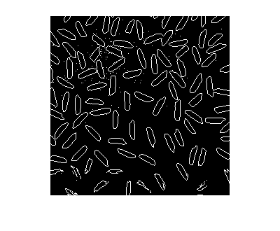
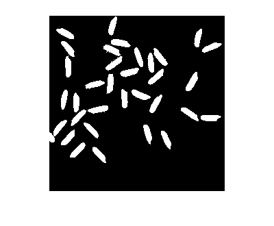
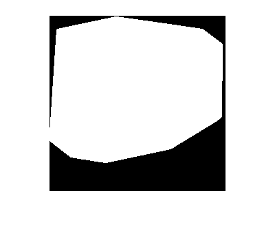
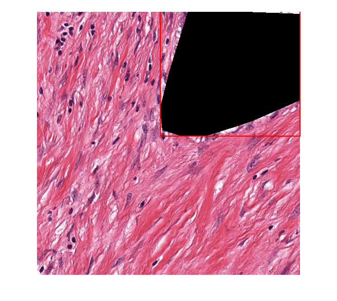
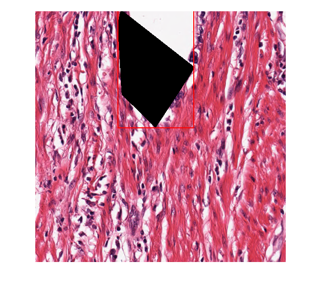
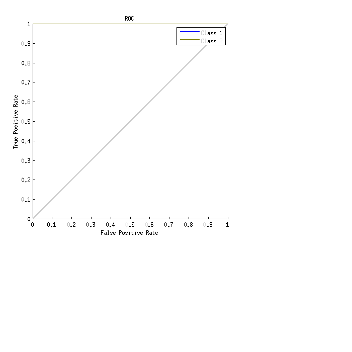

Lab Work on 'Pancreatic tumor segmentation and detection of tumor cells migration based on white light and second harmonic generation microscopic images', Lab 16
Lab completed by: Elijah Bernstein-Cooper
Contents
Warmp up 1)
Detect the edges of the rice
clear; close all; color_range = [100 200]; norm_color_range = color_range / 255; a=imread('cameraman.tif'); [m n]=size(a); bw=im2bw(a,0.6); %imshow(bw) b=a.*uint8(bw); %imshow(b) %imshow(a) % Keep a(a < color_range(1)) = 0; a(a > color_range(2)) = 0; %imshow(a) a = imread('rice.png'); bw=im2bw(a); %figure, imshow(bw) se = strel('disk',1); erode = imerode(bw,se); %figure, imshow(erode); bw_edges = bw; bw_edges(imerode(bw,strel('disk',1))) = 0; %# mask all but the border imshow(bw_edges)
Warmp up 2)
Keep rice with areas between 200 and 300 pixels
bw_area = xor(bwareaopen(bw, 200), bwareaopen(bw,300)); figure, imshow(bw_area)
Warmp up 3)
Construct convex hull for rice with areas between 200 and 300 pixels
CH = bwconvhull(bw_area); figure, imshow(CH)
4.2 Exercise
Create feature set of hough transform of cancerous regions. The region size should be tuned to mask out the teardrop region which contains cancer. Region sizes chosen were 1000 and 500 pixels. The images represent the RGB SHG image with the convex hull of the mask of the cancerous region in black. The red bounding boxes are the regions of interest to compute the hough transform. I used the function hough_feature_generator provided by the authors to compute mask out the regions of cancer and perform a hough transform on the region. The features used to identify regions of cancer are the maximum value of the Hough matrix, the average of all elements of the Hough matrix, and the average of all nonzero elements of the Hough matrix
% load data data(1).HE_IMAGE='TransformedTumour Pancreas 84-1.tif'; data(1).SHG_IMAGE='pancreatic tumor 2000 - 84-1.tif'; data(2).HE_IMAGE='TransformedTumour Pancreas 112-2.tif'; data(2).SHG_IMAGE='pancreatic_tumor_112-2.tif'; data(2).region_size = (1000); data(1).region_size = (500); % Perform masking and get properties of the hough transform for i=1:length(data); [data(i).A,data(i).H_subimage,data(i).H_block]=hough_feature_generator(data(i).HE_IMAGE,data(i).SHG_IMAGE,data(i).region_size,false); end disp('Feature sets of 1st image') disp(data(1).A) disp('Feature sets of 2nd image') disp(data(2).A) %figure %imshow(H_subimage)
Warning: Directory already exists. Warning: Directory already exists. Feature sets of 1st image 355.0000 56.5956 126.3734 346.0000 57.1749 127.8603 363.0000 62.6157 139.9041 215.0000 34.4590 76.8729 237.0000 40.1202 89.4316 353.0000 56.7796 126.3502 147.0000 22.4113 49.9801 224.0000 37.3364 83.4538 356.0000 58.1627 129.4989 Feature sets of 2nd image 262.0000 47.6300 106.1604 297.0000 49.0951 109.3515 297.0000 53.3044 118.8763 223.0000 37.9725 84.6042 245.0000 43.9810 98.0400 304.0000 52.9070 117.8417 246.0000 44.2643 98.6689 308.0000 49.8774 111.0938 304.0000 55.1628 123.0142 
4.3 Exercise
Correct classification was typically around 80\% for 30 hidden layers when using random initialized weight guesses. When the seed number was set to the example in the lab the correct classification rose to 90\%. Perhaps some discussion in the lab on how to best choose initial guesses for weights of the hidden layers in the neural network would help the user understand this difference.
The plot represents the rate of true positives over false positives. A steeper curve is ideal, where there are many true positives and few false positives.
% Create hidden layers of neural net net = patternnet(10); %view(net) % Load the precomputed data load('A'); load('b'); x=A'; t=zeros(2,length(b)); for i=1:length(b) if b(i,1)==1 t(1,i)=1; t(2,i)=0; else t(1,i)=0; t(2,i)=1; end end % Initialize number of patterns in neural net setdemorandstream(391418381); net = patternnet(30); [net,tr] = train(net,x,t); %nntraintool %plotperform(tr) testX = x(:,tr.testInd); testT = t(:,tr.testInd); testY = net(testX); testIndices = vec2ind(testY); plotconfusion(testT,testY) [c,cm] = confusion(testT,testY); fprintf('Percentage Correct Classification: %f%%\n', 100*(1-c)); fprintf('Percentage Incorrect Classification : %f%%\n', 100*c); plotroc(testT,testY)
Percentage Correct Classification: 90.909091% Percentage Incorrect Classification : 9.090909%